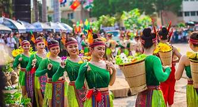

Traditions and Festivals
Vietnam is home to a vibrant culture influenced by its history and geography. The country is known for its many festivals and traditions, including Tet, the Lunar New Year celebration, and the Mid-Autumn Festival. Music, dance, and art play a significant role in Vietnamese life, with traditional performances featuring instruments like the Dan Bau and the Dan Tranh.
In addition to traditional practices, modern Vietnamese culture also embraces contemporary art, fashion, and cinema. Whether you are exploring the bustling markets of Hanoi or attending a traditional water puppet show, Vietnam’s culture is an unforgettable experience.